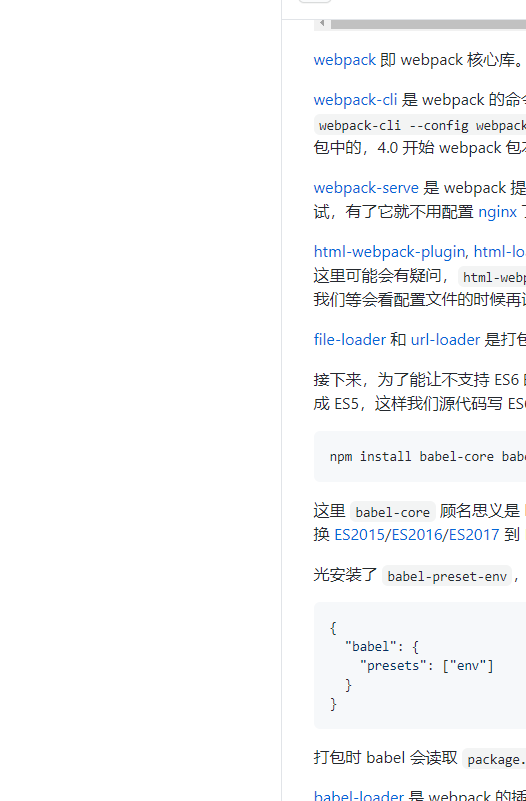

<div class="foo">
  <h1>Page Foo</h1>
  <a href="javascript:" class="foo__gobar">goto /bar</a>

  <pre></pre>

  <p>
    <!-- 小于 40kb（需配置） 的图片,  标签的 src 被编译为 Data URI 格式-->
    
  </p>

  <p>
    <!-- 大于 40kb 的图片, 图片会被储存到输出目录, src 会被替换为打包后的路径 -->
    
  </p>
</div>